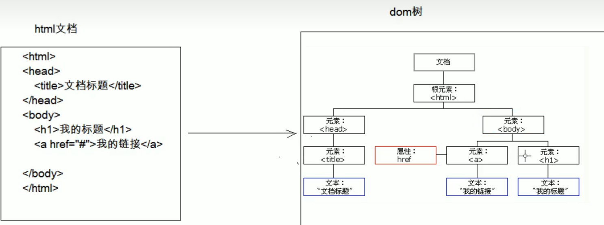

# XML
# 概念
Extensible Markup Language 可扩展标记语言
- 可扩展：标签都是自定义的。 <user> <student>
- 功能
- 存储数据
- 配置文件
- 在网络中传输
- 存储数据
- xml 与 html 的区别
- xml 标签都是自定义的，html 标签是预定义。
- xml 的语法严格，html 语法松散
- xml 是存储数据的，html 是展示数据
# 语法
基本语法：
- xml 文档的后缀名 .xml
- xml 第一行必须定义为文档声明
- xml 文档中有且仅有一个根标签
- 属性值必须使用引号 (单双都可) 引起来
- 标签必须正确关闭
- xml 标签名称区分大小写
快速入门：
<?xml version='1.0' ?><users><user id='1'><name>zhangsan</name>
<age>23</age>
<gender>male</gender>
<br/></user><user id='2'><name>lisi</name>
<age>24</age>
<gender>female</gender>
</user></users>组成部分：
文档声明
格式：<?xml 属性列表？>
属性列表：
version：版本号，必须的属性，一般都是 **<?xml version='1.0' ?>**
encoding：编码方式。告知解析引擎当前文档使用的字符集，默认值：ISO-8859-1
换解码方式：encoding=' GBK' 或 ‘utf-8’
standalone：是否独立 standalone = 'yes'
- 取值：
- yes：不依赖其他文件
- no：依赖其他文件
- 取值：
指令 (了解)：结合 css 的
- <?xml-stylesheet type="text/css" href="a.css" ?>
标签：标签名称自定义的
- 规则：
- 名称可以包含字母、数字以及其他的字符
- 名称不能以数字或者标点符号开始
- 名称不能以字母 xml（或者 XML、Xml 等等）开始
- 名称不能包含空格
- 规则：
属性：
id 属性值唯一 ，单双引号都可以引起来文本：
CDATA 区：在该区域中的数据会被原样展示
- 格式： <![CDATA [ 数据]]>**
约束：规定 xml 文档的书写规则
* 作为框架的使用者 (程序员)：
1. 能够在 xml 中引入约束文档
2. 能够简单的读懂约束文档
- 分类：
- DTD: 一种简单的约束技术
- Schema: 一种复杂的约束技术
- 分类：
# DTD
引入dtd文档到xml文档中 | |
内部dtd：将约束规则定义在xml文档中 | |
外部dtd：将约束的规则定义在外部的dtd文件中 | |
本地：<!DOCTYPE 根标签名 SYSTEM "dtd文件的位置"> | |
网络：<!DOCTYPE 根标签名 PUBLIC "dtd文件名字" "dtd文件的位置URL"> |
# Schema
* 引入： | |
1.填写xml文档的根元素 | |
2.引入xsi前缀. xmlns:xsi="http://www.w3.org/2001/XMLSchema-instance" | |
3.引入xsd文件命名空间. xsi:schemaLocation="http://www.itcast.cn/xml student.xsd" | |
4.为每一个xsd约束声明一个前缀,作为标识 xmlns="http://www.itcast.cn/xml" | |
<students xmlns:xsi="http://www.w3.org/2001/XMLSchema-instance" | |
xmlns="http://www.itcast.cn/xml" | |
xsi:schemaLocation="http://www.itcast.cn/xml student.xsd"> |

# 解析
操作 xml 文档，将文档中的数据读取到内存中
* 操作 xml 文档
1. 解析 (读取)：将文档中的数据读取到内存中
2. 写入：将内存中的数据保存到 xml 文档中。持久化的存储
- 解析 xml 的方式：
- DOM：将标记语言文档一次性加载进内存，在内存中形成一颗 dom 树
- 优点：操作方便，可以对文档进行 CRUD 的所有操作
- 缺点：占内存
- SAX：逐行读取，基于事件驱动的。
- 优点：不占内存。
- 缺点：只能读取，不能增删改
- DOM：将标记语言文档一次性加载进内存，在内存中形成一颗 dom 树
# xml 常见的解析器
Jsoup：jsoup 是一款 Java 的 HTML 解析器，可直接解析某个 URL 地址、HTML 文本内容。它提供了一套非常省力的 API，可通过 DOM，CSS 以及类似于 jQuery 的操作方法来取出和操作数据。
# Jsoup
# 快速入门
步骤：
- 导入 jar 包
- 获取 Document 对象
- 获取对应的标签 Element 对象
- 获取数据
对象的使用：
1. Jsoup：工具类，可以解析html或xml文档，返回Document
* parse：解析html或xml文档，返回Document
* parse(File in, String charsetName)：解析xml或html文件的。
* parse(String html)：解析xml或html字符串
* parse(URL url, int timeoutMillis)：通过网络路径获取指定的html或xml的文档对象
2. Document：文档对象。代表内存中的dom树
* 获取Element对象
* getElementById(String id)：根据id属性值获取唯一的element对象
* getElementsByTag(String tagName)：根据标签名称获取元素对象集合
* getElementsByAttribute(String key)：根据属性名称获取元素对象集合
* getElementsByAttributeValue(String key, String value)：根据对应的属性名和属性值获取元素对象集合
3. Elements：元素Element对象的集合。可以当做 ArrayList<Element>来使用4. Element：元素对象
1. 获取子元素对象
* getElementById(String id)：根据id属性值获取唯一的element对象
* getElementsByTag(String tagName)：根据标签名称获取元素对象集合
* getElementsByAttribute(String key)：根据属性名称获取元素对象集合
* getElementsByAttributeValue(String key, String value)：根据对应的属性名和属性值获取元素对象集合
2. 获取属性值
1. String attr(String key)：根据属性名称获取属性值
2. 获取文本内容
* String text():获取文本内容
* String html():获取标签体的所有内容(包括字标签的字符串内容)
5. Node：节点对象
* 是Document和Element的父类
# 快捷查询方式
selector: 选择器
使用的方法：Elements select (String cssQuery)
代码：
1.获取student.xml的path | |
String path = JsoupDemo6.class.getClassLoader().getResource("student.xml").getPath(); | |
2.获取Document对象 | |
Document document = Jsoup.parse(new File(path), "utf-8"); | |
3.根据document对象，创建JXDocument对象 | |
JXDocument jxDocument = new JXDocument(document); | |
4.结合xpath语法查询 | |
4.1查询所有student标签 | |
List<JXNode> jxNodes = jxDocument.selN("//student"); | |
for (JXNode jxNode : jxNodes) { | |
System.out.println(jxNode); | |
} | |
* 语法：参考Selector类中定义的语法 | |
2. XPath：XPath即为XML路径语言，它是一种用来确定XML（标准通用标记语言的子集）文档中某部分位置的语言 | |
* 使用Jsoup的Xpath需要额外导入jar包。 | |
* 查询w3cshool参考手册，使用xpath的语法完成查询 | |
4.2查询所有student标签下的name标签 | |
List<JXNode> jxNodes2 = jxDocument.selN("//student/name"); | |
for (JXNode jxNode : jxNodes2) { | |
System.out.println(jxNode); | |
} | |
4.3查询student标签下带有id属性的name标签 | |
List<JXNode> jxNodes3 = jxDocument.selN("//student/name[@id]"); | |
for (JXNode jxNode : jxNodes3) { | |
system.out.println(jxNode); | |
} | |
4.4查询student标签下带有id属性的name标签 并且id属性值为itcast | |
List<JXNode> jxNodes4 = jxDocument.selN("//student/name[@id='itcast']"); | |
for (JXNode jxNode : jxNodes4) { | |
system.out.println(jxNode); | |
} |
# web 服务器软件
服务器：安装了服务器软件的计算机
服务器软件：接收用户的请求，处理请求，做出响应
web 服务器软件：接收用户的请求，处理请求，做出响应。
- 在 web 服务器软件中，可以部署 web 项目，让用户通过浏览器来访问这些项目
- web 容器
常见的 java 相关的 web 服务器软件：
- webLogic：oracle 公司，大型的 JavaEE 服务器，支持所有的 JavaEE 规范，收费的。
- webSphere：IBM 公司，大型的 JavaEE 服务器，支持所有的 JavaEE 规范，收费的。
- JBOSS：JBOSS 公司的，大型的 JavaEE 服务器，支持所有的 JavaEE 规范，收费的。
- Tomcat：Apache 基金组织，中小型的 JavaEE 服务器，仅仅支持少量的 JavaEE 规范 servlet/jsp。开源的，免费的。
JavaEE：Java 语言在企业级开发中使用的技术规范的总和，一共规定了 13 项大的规范
# Tomcat
# 下载
- 下载：http://tomcat.apache.org/
- 安装：解压压缩包即可。 安装目录建议不要有中文和空格
- 卸载：删除目录就行了
- 启动：
- bin/startup.bat , 双击运行该文件即可
- 访问：浏览器输入：http://localhost:8080 回车访问自己
http:// 别人的 ip:8080 访问别人
- 可能遇到的问题：
1. 黑窗口一闪而过： | |
原因： 没有正确配置JAVA_HOME环境变量 | |
解决方案：正确配置JAVA_HOME环境变量 | |
2. 启动报错： | |
1. 暴力：找到占用的端口号，并且找到对应的进程，杀死该进程 | |
* netstat -ano | |
2. 温柔：修改自身的端口号 | |
conf/server.xml | |
<Connector port="8888" protocol="HTTP/1.1" | |
connectionTimeout="20000" | |
redirectPort="8445" /> | |
一般会将tomcat的默认端口号修改为80。80端口号是http协议的默认端口号。 | |
* 好处：在访问时，就不用输入端口号 |
关闭：
正常关闭：
- bin/shutdown.bat
- ctrl+c
强制关闭：点击启动窗口的 ×
# 配置
部署项目的方式 | |
1. 直接将项目放到webapps目录下即可。 | |
* /hello：项目的访问路径-->虚拟目录 | |
* 简化部署：将项目打成一个war包，再将war包放置到webapps目录下。 | |
* war包会自动解压缩 | |
2. 配置conf/server.xml文件 | |
在<Host>标签体中配置 | |
<Context docBase="D:\hello" path="/hehe" /> | |
* docBase:项目存放的路径 | |
* path：虚拟目录 | |
3. 在conf\Catalina\localhost创建任意名称的xml文件。在文件中编写 | |
<Context docBase="D:\hello" /> | |
* 虚拟目录：xml文件的名称 |
- 静态项目和动态项目：
- 目录结构
java 动态项目的目录结构：
-- 项目的根目录 | |
-- WEB-INF目录： | |
-- web.xml：web项目的核心配置文件 | |
-- classes目录：放置字节码文件的目录 | |
-- lib目录：放置依赖的jar包 |
* 将 Tomcat 集成到 IDEA 中，并且创建 JavaEE 的项目，部署项目。
# IDEA 与 tomcat 的相关配置
IDEA 会为每一个 tomcat 部署的项目单独建立一份配置文件
- 查看控制台的 log：Using CATALINA_BASE: "C:\Users\fqy.IntelliJIdea2018.1\system\tomcat_itcast"
工作空间项目 和 tomcat 部署的 web 项目
- tomcat 真正访问的是 “tomcat 部署的 web 项目”，"tomcat 部署的 web 项目" 对应着 "工作空间项目" 的 web 目录下的所有资源
- WEB-INF 目录下的资源不能被浏览器直接访问。
断点调试：使用 "小虫子" 启动 dubug 启动